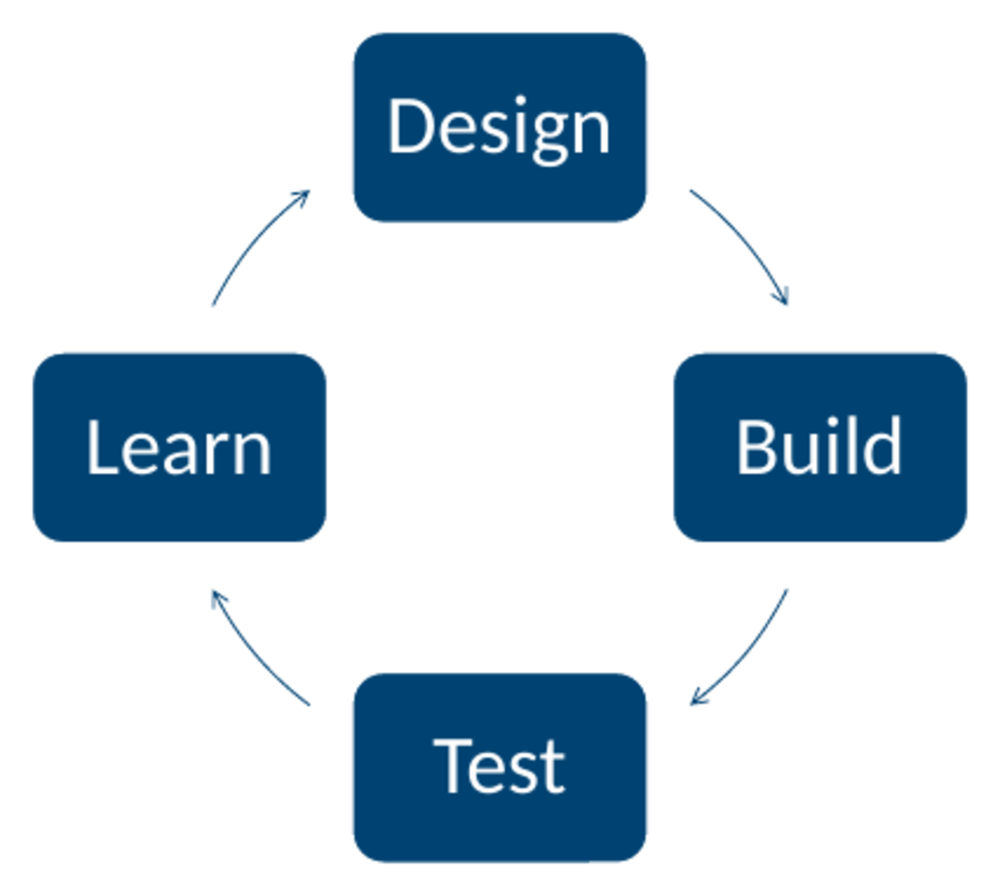
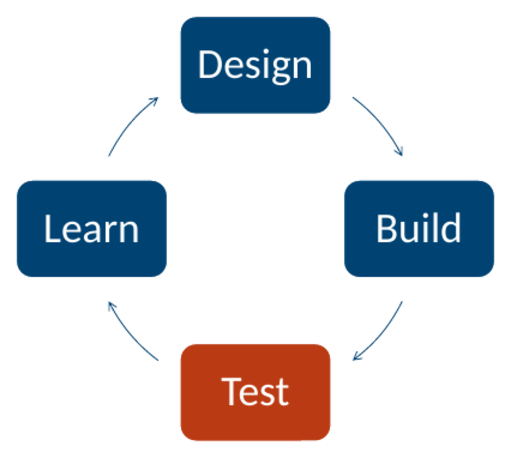
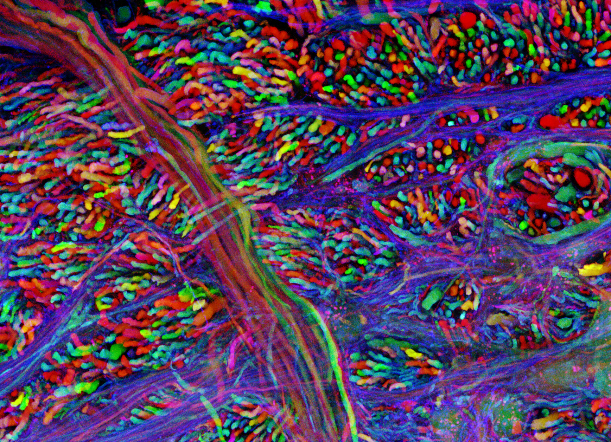
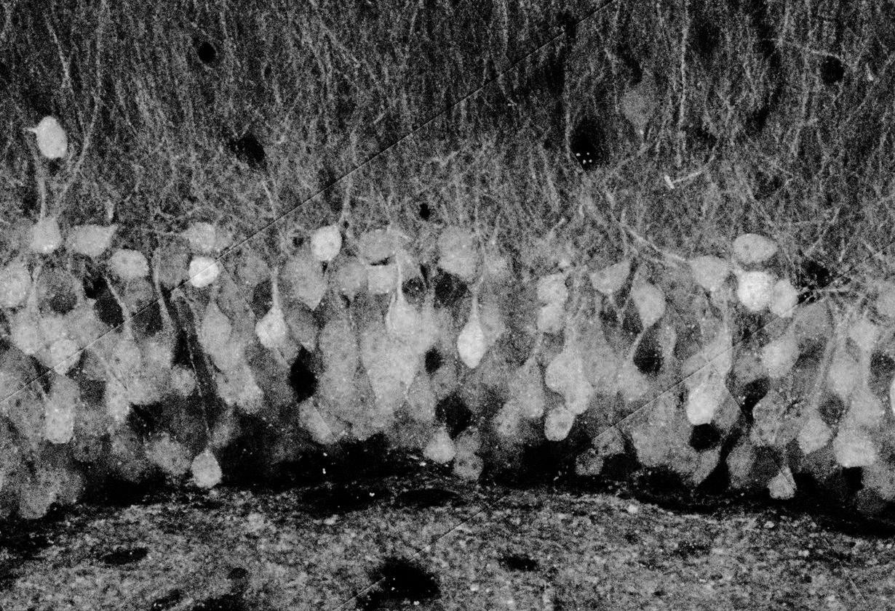
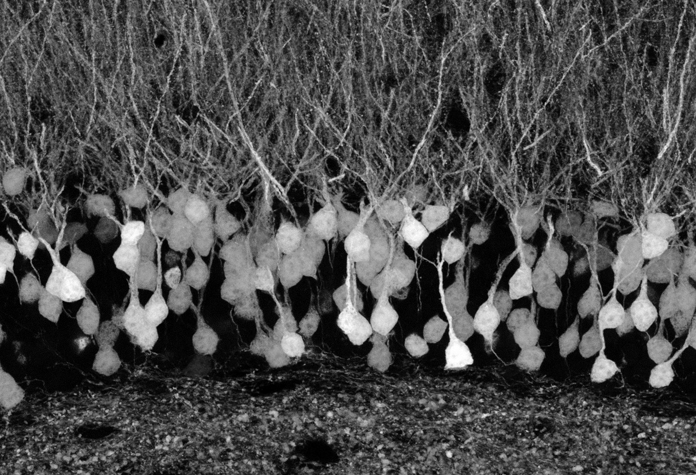
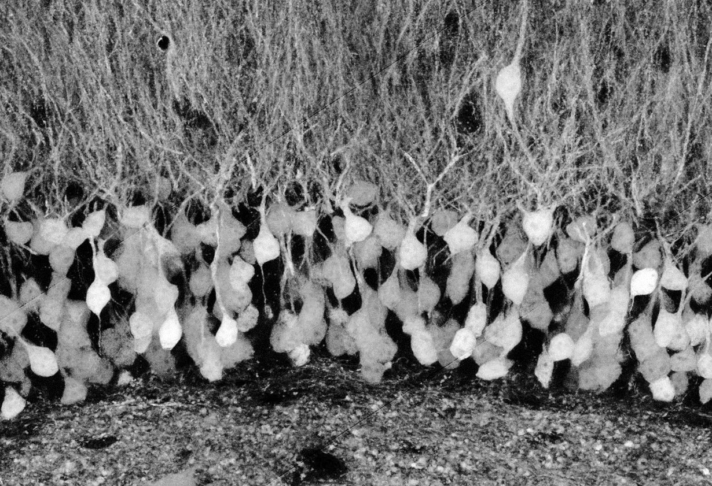
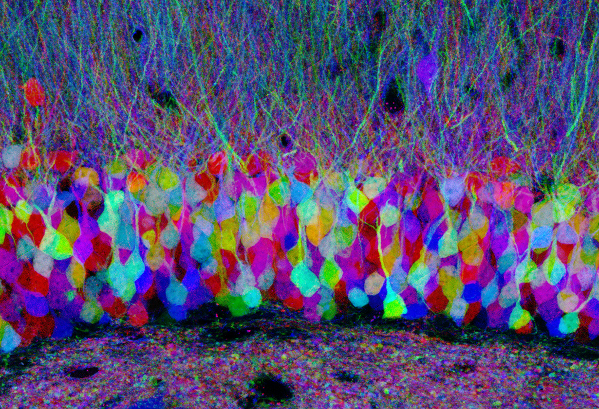

Whole-Cell Analysis
YouTube playlist:
youtube.com/watch?v=plOc9Ei5nvY&list=PL2aPXzks-TgMo_x6XhYmfoZDezm4m-DcL
YouTube playlist:
youtube.com/watch?v=plOc9Ei5nvY&list=PL2aPXzks-TgMo_x6XhYmfoZDezm4m-DcL


Brainbow 3.1: Cai et al., Nat Methods 2013, PMID 23817127

Jean Livet, Lichtman lab. First Prize, 2007 Olympus BioScapes. Cell Image Library CIL:40984, CC BY-NC-ND
Demonstrations are also common in the genetic engineering space. Often they employ beautiful images and videos to entice the reader’s attention. In this example, we are looking at a false-color rendering of the Brainbow. The Brainbow was a genetic circuit composed of three fluorescent proteins randomly expressed at several distinct expression levels. A transgenic animal encodes the device, and each neuron of its brain will express one combination of the fluorescent proteins at specific levels. Each neuron then has a unique signature relative to its neighbors in terms of the relative fluorescence on the three channels. When they do microscopy on slices of the brain material, they can quantify each channel, determine which combination of levels are present in each cell, and assign a color specific to that combination. They then false-color the image to generate what is shown here. The Brainbow: a prize-winning micrograph of a Brainbow mouse brainstem, packed with axons that each glow their own hue — red, orange, yellow, green, cyan — so every neuron can be told apart from its neighbours.


Jean Livet, Lichtman lab. Honorable Mention, 2007 Olympus BioScapes. Cell Image Library CIL:42753, CC BY-NC-ND
In reality, what the scientists probably saw under a microscope looked something like this. And they could have published that image, and the technical merit and utility of the technique is in no way compromised. They could have provided graphs showing statistics about how well they can distinguish two cells, or other more technical measures of performance. However, without the false coloring the ability to distinguish the neurons is not communicated, and the utility of the technique would be lost. It might be understandable to software, but this ability is not communicated without the false-color contrivance. Additionally, the technique is simply not as tantalizing and interesting as when they produce the beautiful image. One field of Brainbow hippocampus as the microscope records it: the three fluorescence channels side by side in greyscale, each a band of densely packed pyramidal cells. In any one channel, one neuron cannot readily be told from the next.
The same three channels, merged as red, green and blue. Jean Livet, Lichtman lab. Honorable Mention, 2007 Olympus BioScapes. Cell Image Library CIL:42753, CC BY-NC-ND
The colorful version communicates to the reader not only that this labeling method allows the tracking of individual cells, but you also get an impression for how well this methodology can distinguish the axons of one cell from another. The same field again, its three channels merged as red, green and blue so that every neuron takes its own colour. Nothing has been added to the data since the previous slide; only the rendering has changed, and only now can the cells be told apart.or…
or…
or…
or…
…about four months later
Xiao et al., Cell Stem Cell 2018
Here’s another example. Suppose you want a gene therapy for diabetes. In one real study, Xiao and colleagues packaged two genes, Pdx1 and MafA, in a virus and infused it into the pancreas of diabetic mice, where it turned the mice’s own alpha cells into insulin-making cells. The technical experiment would involve identifying a mouse diabetes model, performing the treatment with the gene therapy, and then quantifying insulin levels in treated and untreated mice. The technical test of a gene therapy for diabetes, listed as three steps: find a mouse diabetes model, treat it with the gene therapy, and compare insulin levels in treated and untreated mice.| Investors | it pays | Practices: Does it pay? |
|---|---|---|
| Regulators | it is safe | Practices: Is it safe? Who says so? |
| The people who live with it | they want it here | Practices: Who else gets a say? |
The audience picks the demonstration. Some of the best ones are barely technical: an axe, a car, a flame.
When developing a new technology, it will always be valuable to think about what experiments would make good demonstrations. There will always be additional, more technical experiments that you need to perform to show that specific attributes of your system work as intended, but this is no substitute for the demonstration. You should ask yourself, What is the closest experiment you can get to the “real world” use of this organism? What demonstration experiments are necessary to show that “unwanted” behavior is absent in the system? Is there any interesting in a sensory way (visual, smell, audible, etc.) that will illustrate the functioning of the system? Three questions to ask when designing a demonstration: what is the closest experiment to the real-world use of the organism; what demonstrations show that unwanted behaviour is absent; and is there anything sensory — visual, smell, audible — that will illustrate the system working.An engineered soil bacterium lets corn grow with less nitrogen fertilizer.
You get to run one demonstration experiment before asking someone to adopt, approve, fund or accept it.
It is 2026. Who is your audience, what do they need to believe, and what would you show them?
Before you design anything, I want you to tell me who you are trying to convince. Every audience here is asking a different question, and the experiment that answers one of them is the wrong experiment for the next one. The farmer wants to know whether it pays. That is yield this season, on their soil, against what they would have spent on fertilizer. A side-by-side strip in one field answers that, and a paper does not. The regulator wants to know what the organism does once it is out of the field. How far does it spread, how long does it persist, does it move its genes into anything else, and can you get it back if you need to. That is a containment and monitoring study, and it runs for years. The food company wants to know what ends up in the grain. Is there anything new in the kernel, is it an allergen, and can they tell their customers it is not in the food. The investor is asking about the business and not the biology. Who owns the seed treatment, does the farmer have to buy it again next year, and what happens when a fertilizer company copies it. And the neighbours are asking what is in their water, and whether anyone asked them. Now look at how those fight each other. The strip trial that convinces the farmer tells the regulator nothing about spread. The containment study that satisfies the regulator is invisible to the farmer, and it takes longer than the company has money for. You only get one experiment, so you have to choose. The last piece is what makes this a 2026 question. Who does your audience trust? A university, a neighbour, a company? That may decide your experiment more than the biology does. Question to ponder, on the amber ground. An engineered soil bacterium lets corn grow with less nitrogen fertilizer. You get to run one demonstration experiment before asking someone to adopt, approve, fund or accept it. It is 2026: who is your audience, what do they need to believe, and what would you show them?